My R Skills
Demo of a website I worked on using R and R Shiny in 2019, showing data on the effects of different environmental stressors on lakes in the IISD’s Experimental Lakes Area (ELA).
What is R?
"R is a free software environment for statistical computing and graphics."
R is a programming language. It was developed in the 1990s by statisticians Ross Ihaka and Robert Gentleman at the University of Auckland as a descendant of Scheme with specialized statistical computing and graphics capabilities. It’s free and excellent for:
- Statistics
- Graphics and visualization
- Data manipulation and analysis
- Programs benefitted by R’s use of vectors
- Web applications
What is Shiny?
“Shiny is an R package that makes it easy to build interactive web apps straight from R.”
Shiny is an R package created in 2012 for building reactive interfaces that allow the user to interact with data stored in the server by manipulating widgets like buttons, checkboxes, drop-downs, sliders, and text input.
How do I know R and Shiny?
I first learned R as a student researcher in Duke’s Data+ program. My research team was investigating the effects of different environmental stressors on lakes in the IISD’s Experimental Lakes Area, and we had over fifty years of massive datasets. We used R to wrangle and clean the data, and then to develop an interactive R Shiny website for users to see the data for themselves. That website can be found here.
I later performed similar work on a different dataset, this time over fifty years of Duke University student enrollment data. I worked with a team of researchers to create another interactive R Shiny website to show and allow users to explore the data for themselves. That website can be found here.
What can I do with R and Shiny?
To see samples of my work with R and Shiny, look through the screenshots of widgets I have created with R and Shiny below, or better yet, check out the websites I created using R and Shiny to interact with the data yourself!
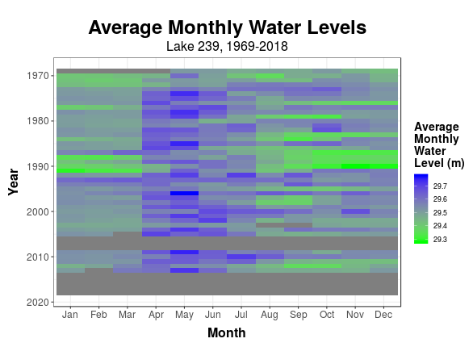 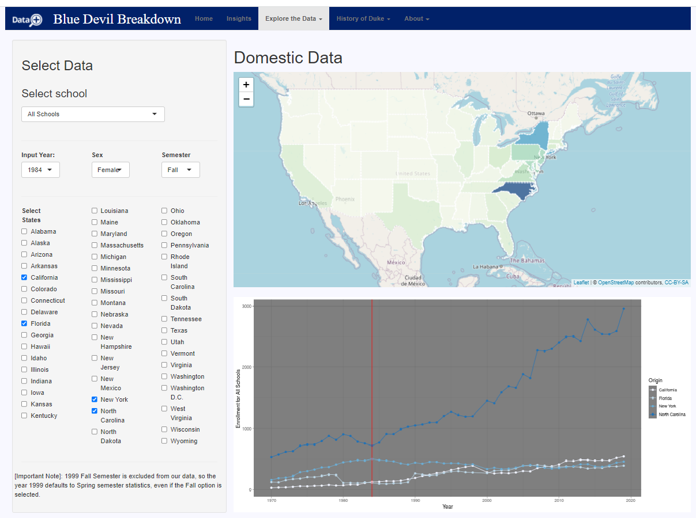
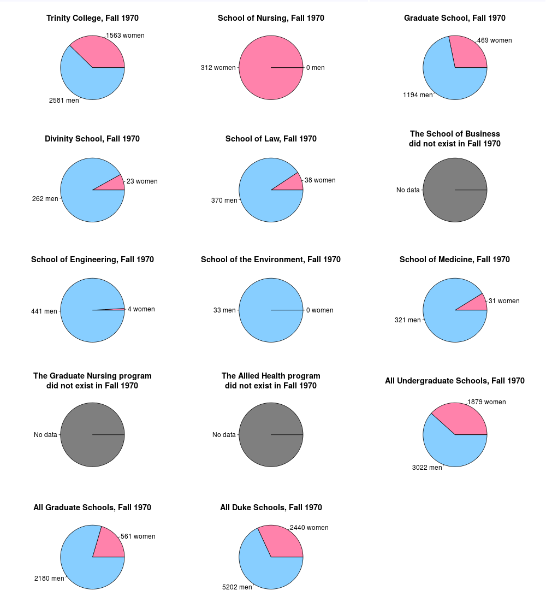
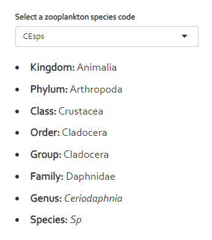
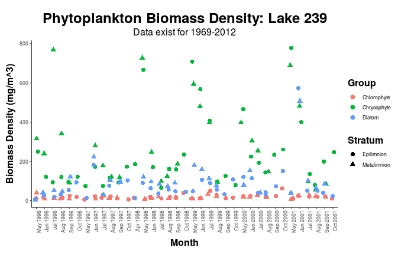
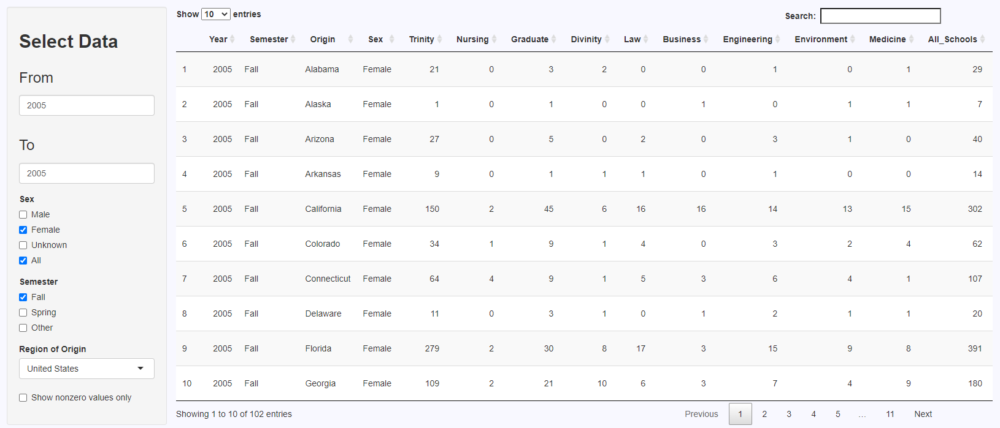
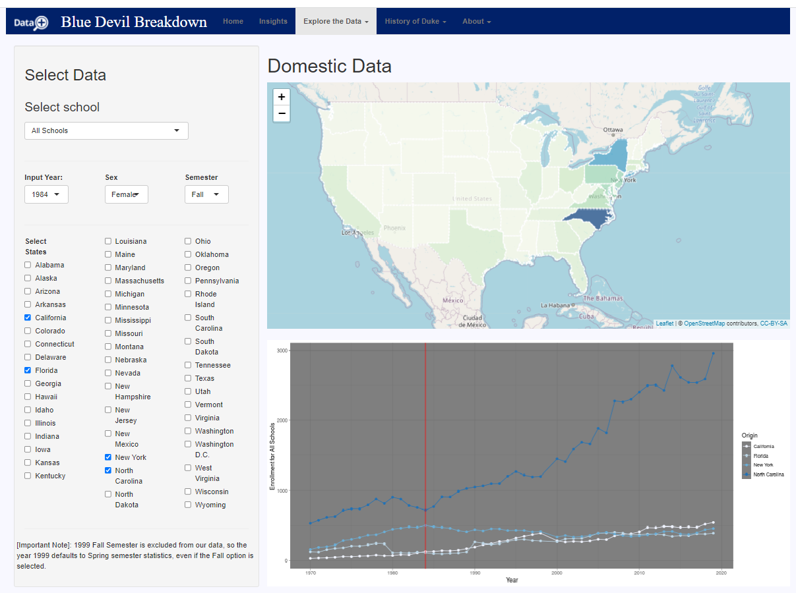
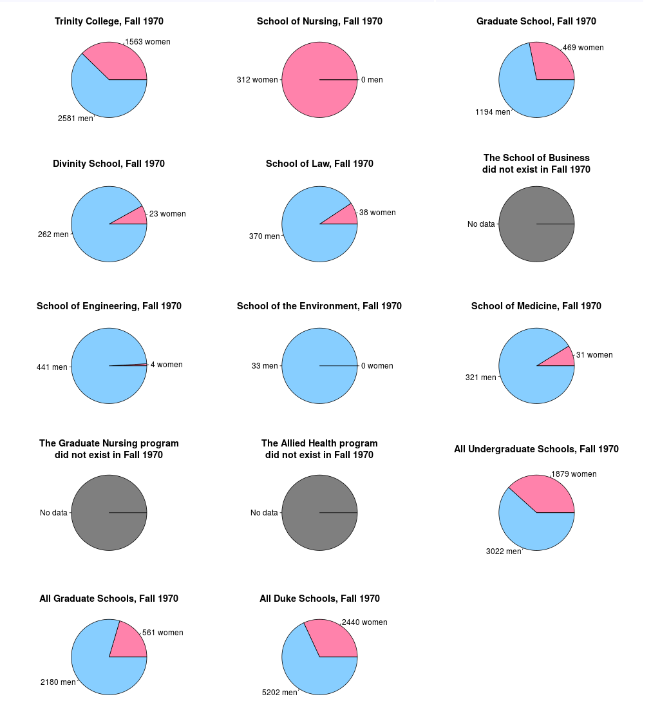
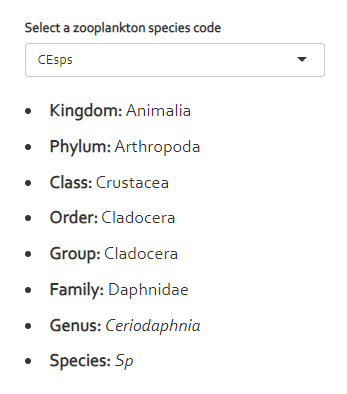
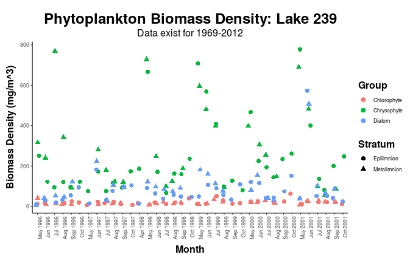
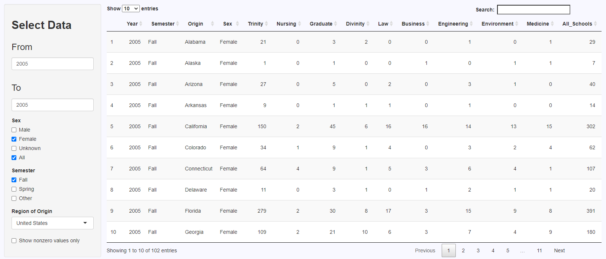